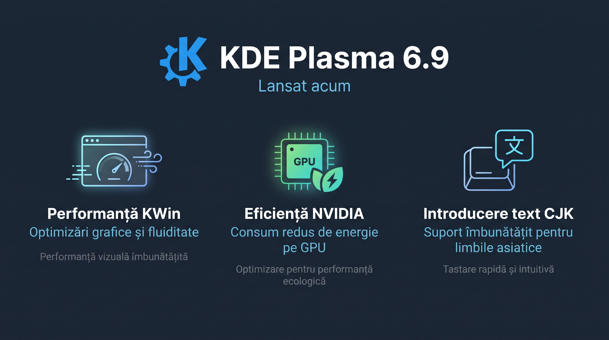

KDE Plasma 6.9 aduce optimizări de performanță în KWin, eficiență energetică pe GPU-urile NVIDIA și introducere de text CJK

Dezvoltatorii KDE au prezentat o nouă serie de funcționalități și optimizări planificate pentru viitorul mediu desktop Plasma 6.9, programat pentru lansare la sfârșitul lunii februarie 2027. Actualizarea se concentrează pe performanța compositorului KWin, reducerea consumului de energie pe plăcile grafice NVIDIA, suport extins pentru limbile asiatice pe tastatura virtuală și simplificarea setărilor de sistem.
1. Performanță KWin, eficiență NVIDIA și stabilitatea plugin-urilor
Overlay planes pentru NVIDIA: KWin adaugă suport pentru planuri de suprapunere (overlay planes) pe GPU-urile NVIDIA care rulează drivere din versiunea 615.78.08 sau mai nouă, măsură menită să reducă semnificativ consumul de energie.
Capturi de ecran mai rapide și independență de OpenGL: Funcționalitatea de captură de ecran din KWin a fost optimizată (accelerând Spectacle și alte aplicații care folosesc plugin-ul compositorului), iar plugin-urile KWin pentru capturi de ecran și selectorul de culori (color picker) nu mai depind direct de OpenGL.
Protecție împotriva plugin-urilor instabile și remedieri kernel: Dacă un plugin terț provoacă blocarea repetată a compositorului KWin, acesta va fi descărcat automat după două crash-uri pentru a preveni problemele ulterioare. Totodată, a fost introdusă o soluție (workaround) pentru o problemă din nucleul Linux care cauza sacadări vizuale (stuttering) la deschiderea și închiderea ferestrelor pe anumite sisteme.
Economisirea resurselor la imagini statice: Plasma va evita procesarea inutilă ca animație pentru fișierele de imagine care conțin un singur cadru, reducând consumul de resurse.
2. Introducere de text CJK, accesibilitate și reorganizarea setărilor
Suport CJK în tastatura virtuală: Tastatura pe ecran (on-screen keyboard) din Plasma include acum procesoare de compunere a textului (text composers) pentru limbile chineză, japoneză și coreeană (CJK).
Control asupra cursorului și accesibilitate: Utilizatorii pot ajusta rata de clipire a cursorului de text în majoritatea aplicațiilor sau pot dezactiva complet clipirea acestuia. Pagina de setări Accessibility primește link-uri directe către controalele de scalare a ecranului și dimensiune a fonturilor.
Separarea aplicației Font Management: Administrarea fonturilor (Font Management) este mutată din System Settings într-o aplicație independentă, reducând aglomerarea interfeței de configurare.
Configurare multi-monitor și Plasma Login Manager: Pe sistemele cu mai multe monitoare, selectarea opțiunii Display Configuration din meniul contextual al desktopului deschide pagina de setări direct pe ecranul respectiv. De asemenea, sincronizarea setărilor desktop cu Plasma Login Manager transferă acum și preferințele Night Light, iar sesiunile marcate ca ascunse nu mai sunt afișate în ecranul de autentificare. Meniul de aplicații Kicker primește opțiunea de a afișa o etichetă text lângă pictogramă (similar cu Kickoff).
3. Remedieri de erori pe Wayland și desktop
Corecții pentru widget-uri și montarea discurilor: A fost rezolvat un blocaj al desktopului care apărea la încercarea de a adăuga widget-uri pe un desktop deja plin, iar regulile de montare automată a discurilor (automounting) funcționează mai fiabil datorită identificării persistente a unităților de stocare.
Alte remedieri: Îmbunătățirea pictogramelor aplicațiilor web în Task Manager, corectarea etichetelor neclare (blurry) de pe desktop la anumiți factori de scalare, restaurarea ultimului mod de captură utilizat în Spectacle și rezolvarea unei probleme cu scurtăturile de tastatură pe Wayland care afecta terminalul Yakuake.